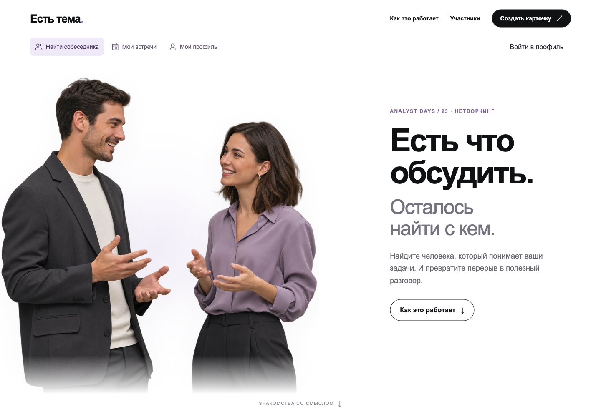
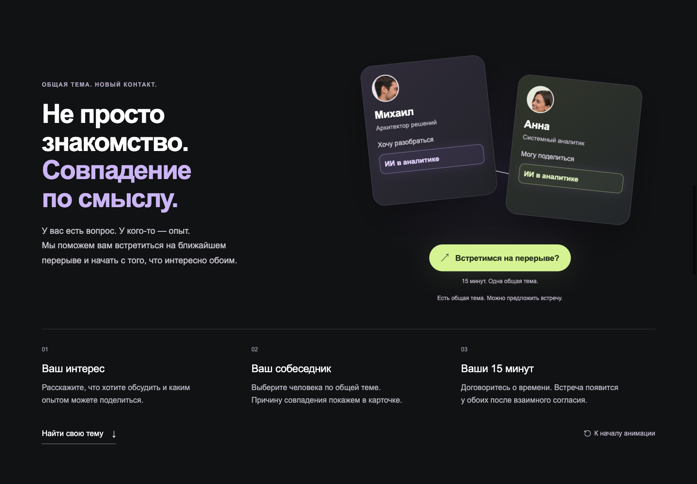
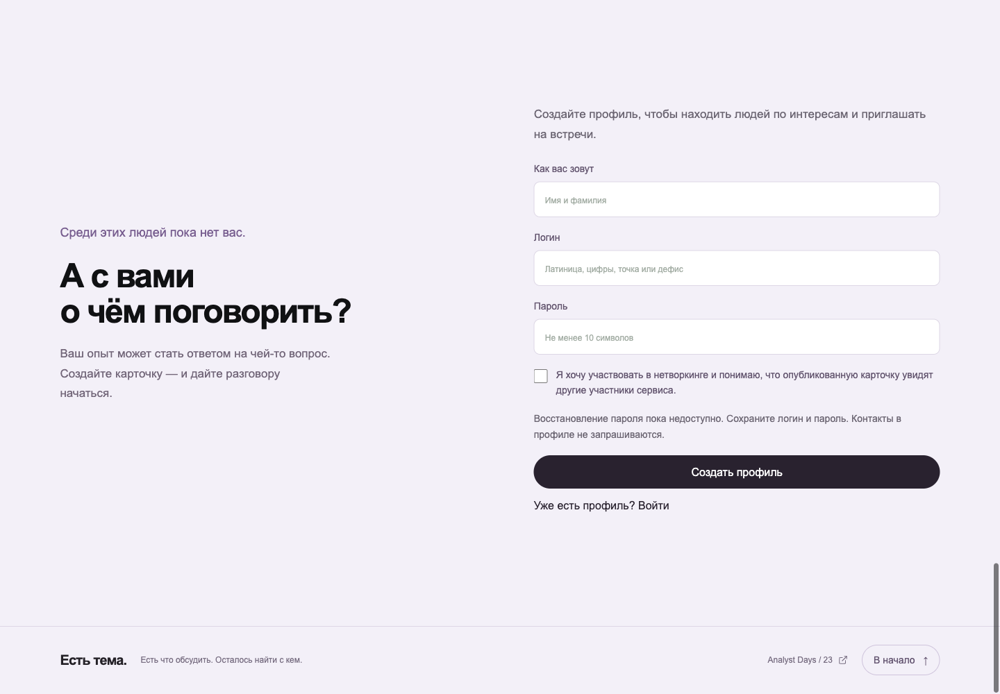
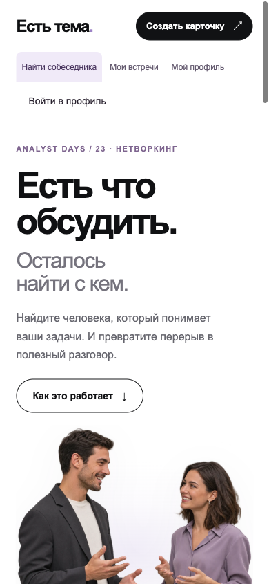
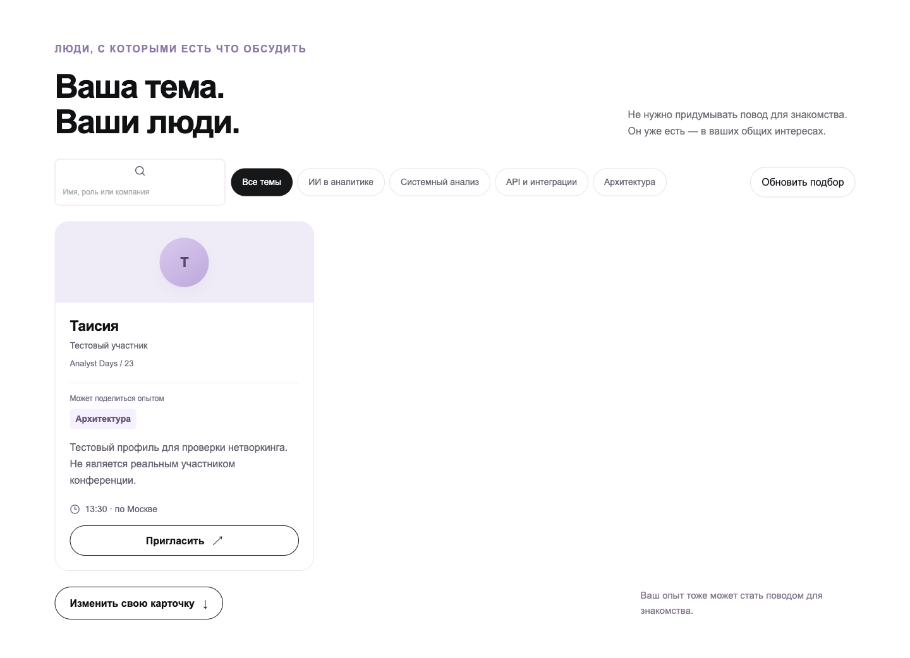

Лендинг продукта: утверждённый дизайн
Открыть «Есть тема». Четыре блока встроены в приложение. Снимки сделаны с опубликованной версии 21 ноября 2026 года; это работающий интерфейс, а не отдельный прототип.
| Блок | Ценность и целевое действие |
|---|---|
| Первый экран | «Есть что обсудить. Осталось найти с кем.» Люди в разговоре, короткое обещание пользы; «Как это работает» ведёт к объяснению |
| Совпадение по смыслу | У одного вопрос, у другого опыт. Карточки сближаются по скроллу; общая тема и кнопка «Встретимся на перерыве?» ведут к подбору |
| Ваша тема. Ваши люди. | Рекомендации с объяснением и общим временем; поиск и темы. Для гостя — предложение создать профиль |
| А с вами о чём поговорить? | Ценность собственного опыта; реальная регистрация или редактирование карточки. Подвал возвращает в начало |
На desktop секции занимают минимум экран; при недостатке места растут по содержимому. Сцена закрепляется, когда помещается в окно. Жест останавливается на границе следующего блока; кнопки переходят непосредственно к цели. Движение обратимо и замирает без прокрутки; reduced motion отключает закрепление и анимацию. Основные описания увеличены до 16–18 px.
Снимки опубликованного сайта




Доступные участники после тестовой встречи

Снимок сделан после назначения встречи: состав рекомендаций меняется с занятостью, временем и ограничением повторных приглашений. В момент снимка Ивану показана Таисия. Историческое появление Эльдара перед отправкой подтверждено сценарием приёмки.
Подтверждение и границы
Проверены ширины 1440, 1024, 768, 390 и 320 px: горизонтального переполнения нет, изображение загружается. Маршрут /images/conversation-hero.webp отвечает 200. Исправление Docker добавляет папку public в финальный образ. Результаты — проверки публичной версии.
Изображение создано с помощью ИИ и утверждено пользователем. Анна и Михаил в анимации — иллюстрация механизма, не реальные рекомендации. Тестовые Иван, Эльдар и Таисия участвуют в настоящем API-сценарии; их технический тест не доказывает полезность для реальных участников. Конверсия лендинга и продуктовый эффект не измерены.
ТЗ Frontend, приёмка, сценарий выступления.
Исходный документ: landing.md · К составу пакета